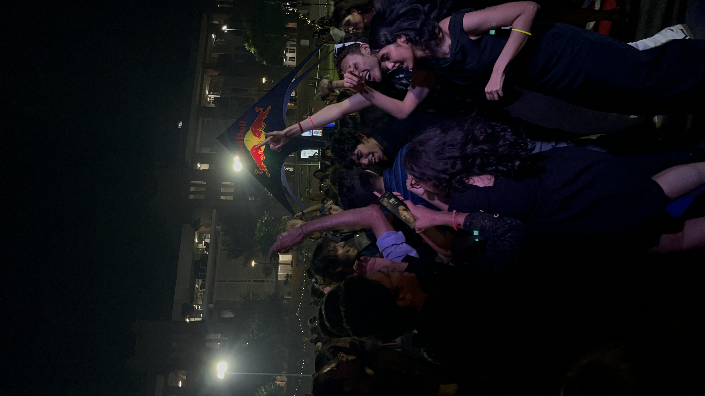
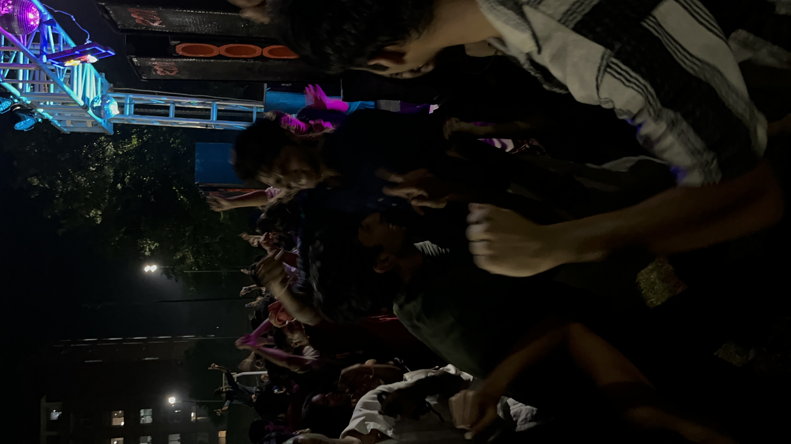
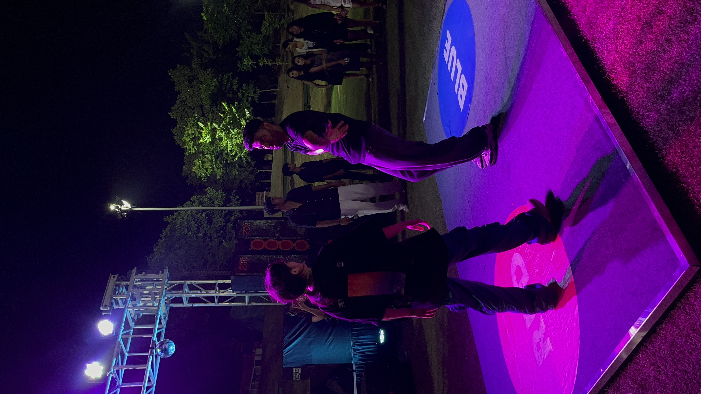
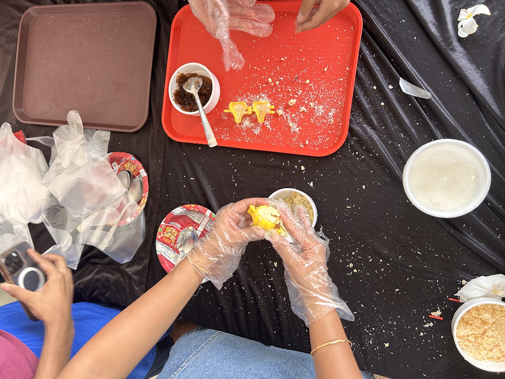
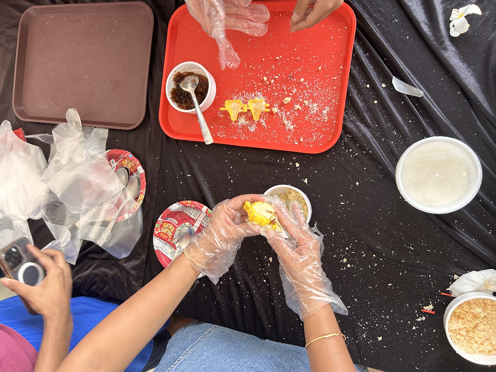

Past Events
-
Shaam-e-Jazbaa
An enchanting evening showcasing diverse talents in music, dance, and poetry.


-
Sopaan
An event focused on cultural exchange, workshops, and insightful discussions.


-
Freshers
Welcoming the new batch of students with icebreakers, performances, and fun.
  


-
Krishna Janmashtami
Celebrating the birth of Lord Krishna with Matki Phod, bhajans, and cultural dances.


-
Ganesh Chaturthi
Welcoming Lord Ganesha with devotion, modaks, and festive celebrations.
 



-
Noor-e-Jazbaa
An evening dedicated to the beauty of Urdu poetry, ghazals, and soulful music.


-
Onam
Celebrating the harvest festival of Kerala with Pookalam, Sadhya, and cultural programs.


-
Garba
A vibrant night filled with energetic Garba and Dandiya Raas dances.


-
Winter Ball
Celebrating the season in style with music, dance, and elegant attire.